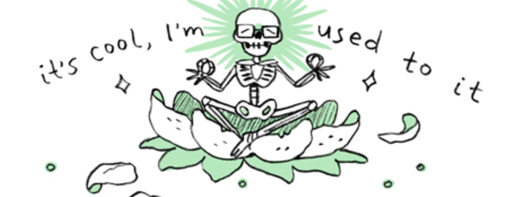

A Carton of Contradictions
18 August 2024

From Johnny Wander's Hawaii travelogue.
I figured out the best use of a journal is to capture strange, contextual feelings before they flit away, but I still don’t write in it any more often than before.
Life continues to plod towards the next amorphous step on a horizon that may or may not continue to exist by the time I reach it. Otherwise, the same ennui of being a fish in the wrong pond continues to persist in the exact way it has, which continues to be flattened into a disaffected “okay” whenever people ask.
I don’t consider anything (external) going on in my life right now that interesting, knowing how self-indulgent and quixotic it is to be writing about it on the internet. For all the isolation I continue to huddle in, though, I still remember a lot of people would probably kill for the life I have.
Quite possibly the most insightful quote on love I’ve encountered, one that probably would have allowed me to sidestep what milquetoast misunderstandings I’ve had in the past, was one I cribbed from a graphic memoir that’s barely even about the topic.
Do you love someone, or do you just think you love someone?
Would you really change for someone, or are you just making yourself more presentable for the role?
My sister, about as jaded about her job prospects after graduating as you’d expect, moved into the house recently. It’s a relief for me, since the parentals have someone who never abandoned the values they raised us with and thus can actually reciprocate correctly, instead of saying “sure” and meaning “no” all the time.
It’s also acutely inconveniencing, since she’s also using the exact same rooms I like to us. There’s another body scrambling my home-goblin-mode-autopilot I have to navigate around, who’s colonizing my basement and unnecessarily putting down the toilet cover and leaves her car in the way and opening the shower curtain in the opposite direction and plays her music too loud and puts the toilet paper on the rack backwards and et cetera, et cetera.
None of this sours our relationship, of course, and it’s all so ultimately inconsequential that I just “suffer” in silence. But like, I’m imagining sharing space with someone after the honeymoon haze wears off, and dreading the pettiness I’m capable of.
Meanwhile, my brother has gone from manifesting his old cynicism through careless texting to taking on a jovial tone and regularly using the 😅 emoji. I am completely unsure if I’m speaking to the same person anymore.
If the longer-than-usual deserts of activity haven’t made it obvious, not only did I get into graduate school, I’m also more than halfway done with graduate school now. Specifically library school, which I honestly can’t say seems to pose nearly as much “academic rigor” graduate level coursework is supposed to have, which of course isn’t a disappointment. Lots of folks try to assure me that my enrollment and continued success great achievement—and yeah, it probably it still is—but when you both A) are undertaking it as a purely pragmatic career decision and B) do not want to be in a place as much as you don’t want to be anywhere else, things remain acutely unceremonious.
I’m pretty sure I’ve nodded towards all of the above in multiple places now, but never written it down in blog text. What few folks who have been reading for a while have surely been aware by now; but deliberately typing it up seems to solidify it in the history of this website, in a sense. Though that solidity is probably just as temporary, since I can barely stand the prospect of rereading a lot of what I’ve written on the internet in the past. There’s an earnestness made uncomfortable out of sheer honesty that resonates from the best of art, yet revisiting my own attempts feels like exposing myself to myself that I can barely bring myself to do it much. “Look at you, trying to grasp towards feelings that would get you bullied by every single person in the vicinity since you were 14.”
Something-something-kill-the-part-of-you-that-cringes and all that—but alas, as cruel genetics and/or neurosis and/or whatever would have it, doing coursework uses too much of the exact same region of my brain that my creative energy comes from. Or, maybe just lifts itself to the forefront by shoving the latter down so there’s barely any room left to try making anything, even during the breaks between semesters like now. You still have to know enough about topics of your choosing to come up with enough material to complete library coursework—which sometimes leaves me feeling like I’m monetizing my hobbies, but instead of monetizing my hobbies they’re being watered down at the same time as my enthusiasm for them.
Even then, there are times, sitting down with deadlines too distant to pay attention to, where I feel these twining urges, or even anxious vibrations, to make something, halfhearted and pointless as it seems to indulge them. Stems from a persistent, shiny wire of hope, I hope.
Lots of weird feelings lately, as one can tell. I originally had an overlong, angsty wall of text about Elden Ring and egg cracking that I left unfinished (not Miquella’s egg, the ones that people gotta crack for themselves sometimes), but if that is actually true I’d imagine that’d come with another full-blown redesign or something. It should be noted, of course, that I am absolutely continuing to lose my mind from the specific malaise curdling out of the various circumstances I’m living and working in, one that moving somewhere else on my own again would (hopefully) do a lot to remedy. This should be what getting this silly piece of paper will enable after the next few long months, but until then…